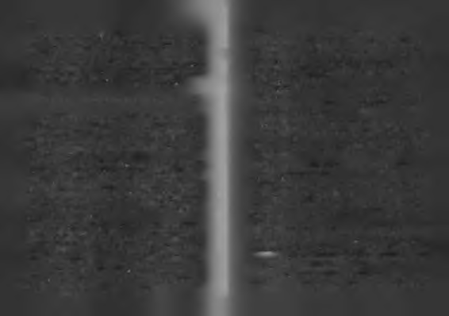

Bu kişiler bakış açılarım yeniden düzenlemeli, hayatı ken
Ş a n s lılık , ba şım ıza ye lin e değil, içim izde olaaa b a ğ lıdır!
dilerine karşı borçlandıran inançlardan zihinlerini temizlemelidir. İyi insan olmak araç değil amaçtır.
Hayatta en çok kim şanslıdır bilir misiniz?
İyi insan olmanın bir şey kazandırması gerekmez. İyilik
En çok imkâna sahip doğanlar mı? Sanmıyorum!
bir hak değil, görevdir. İyi insan olmanın ödülü, iyi insan ol
Hayatta en şanslılar, büyük başarı imkânlarıyla değil, güçmuş olmaktır.
lü bir başarı isteğiyle doğanlardır.
Bazı iyi insanlar başlarına kötü bir şey geldiğinde geçmiş
Bana -pek soran olmuyor ama!- "Başarınızda şansın rolü
te yaptıkları iyiliğin onları korumamasına çok şaşırır. Fransa
oldu mu?" diye soran olursa, "Hayatta en büyük şansım, büyük
Kralı Luis'in dediği gibi, "Tanrı onun için yaptıklarımı unut
bir iş başarma tutkusuyla doğmuş olmam," derim. Biliyorum ki,
tu mu?" diye sızlanmaya başlarlar.
hayatta bütün başarı taktikleri öğrenilebilir ama başarılı olma iste
Bu tür durumlarda nasıl düşünmek gerektiğine dair
ği öğrenilemez. Tutkulu bir istek vardır ya da yoktur.
güçlü bir örneği Hmcal Uluç köşesinde yazmıştı: " Wimble
Tutkulular, tanrının kayırdığını düşündüğüm insanlardır. Budon' in ilk zenci şampiyonu efsanevi tenisçi Arthur Ashe, kan güne kadarki hayatımda bazı insanlar gördüm, önlerinde imkân
naklinden kaptığı AIDS'ten ölüm döşeğindeydi. Hayranlarından
vardı, içlerinde istek yoktu. Bazı insanlar gördüm, içlerinde istek
biri sordu: "Tanrı böylesine kötii bir hastalık için neden seni seçvardı önlerinde imkân yoktu. İstekliler, ne yapıp edip imkânlara ti?" Arthur Ashe cevap verdi: "Tüm dünyada 50 milyon çocuk
ulaştılar. İmkânlı ama isteksizler, imkânlarını da zamanla kaybettenis oynamaya başlar, 5 milyonu tenis oynamayı öğrenir, 500
tiler. İstek imkânı yaratır ama imkân isteği yaratamaz.
bini profesyonel tenisçi olur, 50 bini yarışmalara girer, 5 bini bü
İmkân, isteği olmayana yüktür. İşadamı olmak istemeyen
yük turnuvalara erişir, 50'si Wimbledon'a kadar gelir, 4'n yan
bir çocuğa babasından fabrika kalması ona (bü)yüktür. Bü
finale, 2'si finale kalır. Elimde şampiyonluk kupasını tutarken
yüklük onu istemeyen biri için en büyük yüktür.
Tanrı'ya 'Neden ben?' diye hiç sormadım. Şimdi sancı çekerken,
Şanslılık başımıza gelenlerin ne olduğuyla değil, içimizde olan
Tanrı'ya nasıl 'Niye ben?' derim? Mutluluk insanı tatlı yapar.
ların ne olduğu ile ilgilidir. Hayatın hazırladığı mutlak gollük
Başarı ışıltılı. Zorluklar ise güçlü. Hüzün insanı insan yapar,
pozisyonlarla karşılaşmak şans değildir, o kolay pozisyonda
yenilgi mütevazı. Tanrı'ya asla 'Neden ben' diye sormayın. Ne
gol atsanız da insanlar sizi alkışlamazlar. Başarınızın azim ya
olacaksa olur."
da yetenekten değil, uygun pozisyondan geldiğini bilirler.
iyiliğe güvenmek güzeldir ama sadece ona dayanmak
Şans, zor pozisyonlarda gol atabilen bir yetenekle doğmuş
akıllıca değildir, iyiliğe sığınmamak ama iyi niyet ve sıkı çalış
olmak ve o yeteneğini eğitimle iyice keskinleştirecek bilince
manın gücüne inanmaya devam etmeliyiz.
sahip olmaktır.

1 2 2